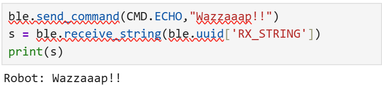
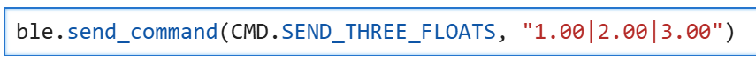
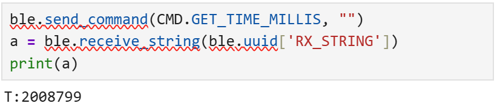
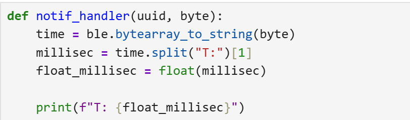
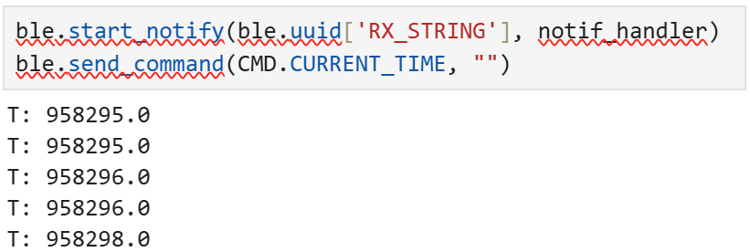
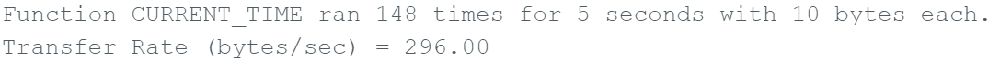

Lab 1: The Artemis board and Bluetooth
Prelab 1A: Hook Up Artemis Board
Before starting the BLE portion, I verified that my Artemis could reliably upload code, print to Serial, and read onboard sensors using the built-in example sketches.
1) Connect + Select Board/Port
- Connected the Artemis to my computer via USB and confirmed a stable physical connection.
- In Arduino IDE, selected Board: RedBoard Artemis Nano and the correct Port.
- At “Basic Examples” I did multiple board checks to confirm the board works as expected.

2) Basic Examples


For 5000-Level Students: Musical Note Tuner
Prelab 1B: Preparing my Computer
Lab 1B focuses on establishing Bluetooth communication between my computer and the Artemis board. Using Python commands sent from a Jupyter notebook, the computer communicates with an Artemis board programmed in Arduino. This also sets up a reusable framework for transmitting data from the Artemis back to the computer over Bluetooth.
1) Jupyter Notebook
Down below is my command prompt showing my FastRobots folder being activated and then opening Jupyter Notebook, to then complete the Lab tasks in the latter sections.

Lab Tasks
For each task below, I included evidence (serial output, Jupyter logs, plots, photos, or videos) to show the system works.
Task 1: ECHO command (string in → augmented string out)
BLEFor this task I updated the ECHO command to the Arduino code that takes in a string value from the python code over BLE. In the python code I called ECHO using send_command and sent it a string value ("Wazzaaap!!"). The Arduino board then printed out a message using this string value to the Serial Monitor saying "Robot: Wazzaaap!!.".
case ECHO:
char char_arr[MAX_MSG_SIZE];
success = robot_cmd.get_next_value(char_arr);
if (!success) return;
Serial.print("Robot: ");
Serial.print(char_arr);
Serial.println(".");
break;
Task 2: SEND_THREE_FLOATS
BLEFor this task I added a updated a command (SEND_THREE_FLOATS) to the Arduino code that takes in three float values from the python code over BLE. In the python code I called SEND_THREE_FLOATS using send_command and sent it three float values (1.0,2.0,3.0). The Arduino board then printed out a message using these three float values to the Serial Monitor.
case SEND_THREE_FLOATS:
float flo_a, flo_b, flo_c;
success = robot_cmd.get_next_value(flo_a);
if (!success) return;
success = robot_cmd.get_next_value(flo_b);
if (!success) return;
success = robot_cmd.get_next_value(flo_c);
if (!success) return;
Serial.print("Don't play with me! I'm not the '");
Serial.print(flo_a);
Serial.print("', or the '");
Serial.print(flo_b);
Serial.print("', or the '");
Serial.print(flo_c);
Serial.println(". Today is not that day!");
break;

Task 3: GET_TIME_MILLIS
For this task I added a new command (GET_TIME_MILLIS) to the Arduino code that sends the current time in milliseconds over BLE. In the python code I called GET_TIME_MILLIS and pulled it from the robot to print it out and get the time in milliseconds.
case GET_TIME_MILLIS:
tx_estring_value.clear();
tx_estring_value.append("T:");
tx_estring_value.append(int(millis()));
tx_characteristic_string.writeValue(tx_estring_value.c_str());
Serial.println(tx_estring_value.c_str());
break;

Task 4: Python notification handler
Here I set up a notification handler in Python to receive and process the time data sent from the Arduino board. The callback function notif_handler is defined to handle incoming notifications. When the Arduino sends the current time in milliseconds, this function is triggered. It decodes the incoming byte data to a string, and extracts the time.

Task 5: Transfer Rate
Here I needed to add a new command (CURRENT_TIME) to the Arduino code that continuously sends the current time in milliseconds for 5 seconds without using recieve_string. In the new command I added a while loop, and used the millis() funciton to capture its start time, and make the while loop run for an extra 5000 milliseconds and added a countloop vairable to count how many times the while loop ran. Now outside of the while loop, I printed the number of loops ran, the total seconds it ran for the amount of data send to each loop, and calculated the transfer rate in bytes/second by multiplying the number of loops by 10 bytes (the size of the string being sent) and dividing it by the total time in seconds (stoptime/1000). Trasfer Rate: 296 bytes/second. To display this on my comupter I called the def notif_handler function, which then called the CURRENT_TIME command to print the changing time on my computer(Jupyter Notebook).
case CURRENT_TIME:{
unsigned long starttime = millis();
unsigned long countloop = 0;
const unsigned long stoptime = 5000;
while (millis() - starttime < stoptime){
tx_estring_value.clear();
tx_estring_value.append("T:");
tx_estring_value.append(int(millis()));
tx_characteristic_string.writeValue(tx_estring_value.c_str());
Serial.print("Board: ");
Serial.println(tx_estring_value.c_str());
countloop++;
}
Serial.print("Function CURRENT_TIME ran ");
Serial.print(countloop);
Serial.print(" times for ");
Serial.print(stoptime / 1000);
Serial.println(" seconds with 10 bytes each.");
Serial.print("Transfer Rate (bytes/sec) = ");
Serial.println((countloop * 10.0) / (stoptime / 1000.0));
break;
}


Task 6: Timestamp array + SEND_TIME_DATA
Buffering[Explain array size, overflow protection, and how SEND_TIME_DATA transmits stored points.]
////////code snippet////////
Task 7: Temp array + GET_TEMP_READINGS
Sensors[Explain paired timestamp/temp format and parsing into two Python lists.]
////////code snippet////////
Task 8: Method Comparison + Memory Estimate
Analysis[Discuss streaming vs buffering: overhead, reliability, timing resolution, scenarios to use each, how quickly method 2 records, and estimate max stored data given 384 kB RAM.]
////////code snippet////////
5000-Level Analysis (if applicable)
Effective Data Rate + Overhead
[Send a message from the computer and receive a reply from the Artemis board. Note the times. Calculate data rate for 5-byte replies and 120-byte replies (and optionally other sizes). Include at least one plot. Discuss overhead and whether larger packets reduce it.]
Reliability
[What happens when you send data faster? Does the computer miss any published data? Include evidence.]
Discussion
[Keep this succinct: what you learned, challenges you faced, and how you fixed them. Mention any unique solutions.]
Code Snippets (Relevant Only)
Include only the relevant functions used for each task. Do not paste your full codebase. Link full code separately if needed.
// ECHO handler
// SEND_THREE_FLOATS handler
// GET_TIME_MILLIS handler
// buffer + SEND_TIME_DATA / GET_TEMP_READINGS handlers# Notification callback + parsing logic
# Timestamp/temperature collection loop